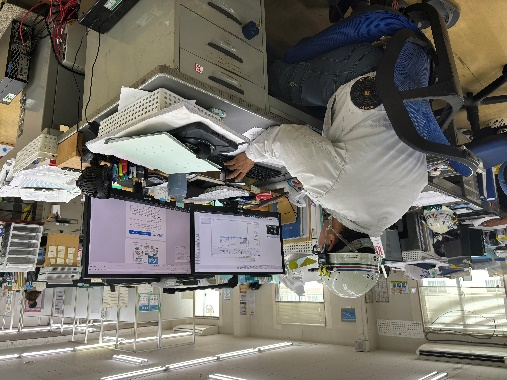
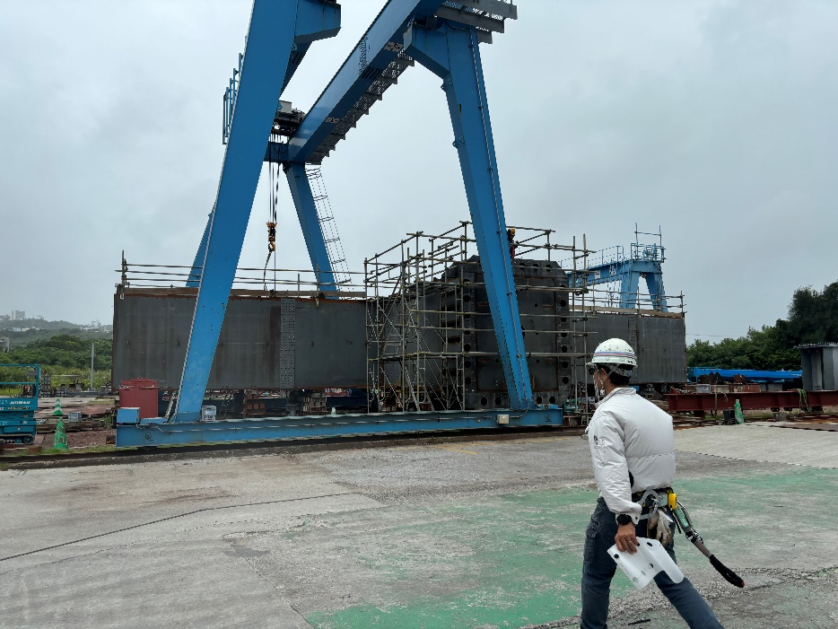
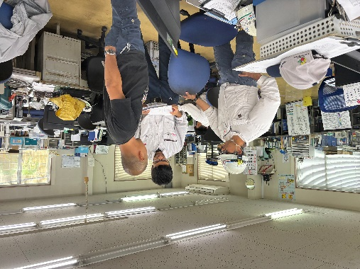

生産部 製作課 課長
O・Kさん
2021年入社
第一工業大学 工学部 航空工学科 卒（現：第一工科大学）
効率的で無駄のない製作工程を提案。
受注した物件の納期に応じて、工場での製作加工工程計画と予算計画を立てます。
続きを読む閉じる
仕事内容
私の仕事内容は鋼構造建築鉄骨加工、橋梁鋼構造物加工を行っています。加工といっても実際に溶接などの作業をするわけではなく、受注した物件の納期に応じて、工場での製作加工工程計画と予算計画を立てます。人員、機材、材料の配置・手配を行い、効率的で無駄のない製作工程を提案し、工場にいる協力会(作業者)はその計画に基づいて製作加工を進めていきます。また、計画を立てるだけではなく、予定通り製品の製作が進んでいるかの進捗管理を行い、問題点やトラブルなどの対応もします。
その他にも作業者の安全を確保するために安全設備の点検、保護具の使用確認、安全教育をすることなども大切な業務の一つです。
学生へひとこと
生産部製作課では、技術スキルだけでなく、コミュニケーション能力や問題解決力も重要です。工学的な知識と現場での実践的なスキルを意欲的に学ぶ姿勢と、チームで協力しながら仕事を進められる人材が求められます。
図面を読取る練習、鉄骨製作に関わる基礎知識や、建築・土木分野の製造工程を学んでおくと、実務に入ってからの理解が早まります。
1日のスケジュール
- 出社
- 朝礼・製作課ミーティング
- 工場管理
- 工程表作成
- 安全工程会議
- お昼休憩（1時間）
- 工場管理
- 明日の作業の準備・段取り
- 終業・帰宅


先輩社員紹介資料①より掲載。所属・経歴・スケジュールは資料掲載時のものです。